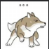

Markdown语法
这里写的是不含任何插件的原生态Markdown的语法
标题
在行首插入1到6个#，对应1到6阶标题
# 这是 H1
## 这是 H2
### 这是 H3
#### 这是 H4
##### 这是 H5
###### 这是 H6引用
>这里是一段引用这里是一段引用
分割线
只需要三个 - 号
---换行
只需要两个以上的空格然后回车
我是首行
我换行了我是首行
我换行了
删除线
~~要删掉的内容~~要删掉的内容
字体格式和颜色
**加粗**
__加粗__
*斜体*
_斜体_加粗
加粗
斜体
_斜体_
==直接飘红文字==
<font color="#dd0000">浅红色文字</font><br />
<font color="#660000">深红色文字</font><br />
<font color="#00dd00">浅绿色文字</font><br />
<font color="#006600">深绿色文字</font><br />
<font color="#0000dd">浅蓝色文字</font><br />
<font color="#000066">深蓝色文字</font><br />
<font color="#dddd00">浅黄色文字</font><br />
<font color="#666600">深黄色文字</font><br />
<font color="#00dddd">浅青色文字</font><br />
<font color="#006666">深青色文字</font><br />
<font color="#dd00dd">浅紫色文字</font><br />
<font color="#660066">深紫色文字</font><br /> ==直接飘红文字==
浅红色文字
深红色文字
浅绿色文字
深绿色文字
浅蓝色文字
深蓝色文字
浅黄色文字
深黄色文字
浅青色文字
深青色文字
浅紫色文字
深紫色文字
更多颜色查询：http://www.114la.com/other/rgb.htm
列表
无序列表
使用 * + - 来做为列表的项目标记
* Candy.
* Gum.
+ Booze.
- Booze.
+ 嵌套
* 嵌套- Candy.
- Gum.
- Booze.
- Booze.
- 嵌套
- 嵌套
有序列表
一般的数字接着一个英文句点作为项目标记，效果与数字无关只与顺序有关
1. Red
2. Green
3. Blue- Red
- Green
- Blue
超链接
超链接和引用
网址
在方括号后面用圆括号接上链接
这是一个[链接显示文本](http://www.google.com "链接title文本")
这是一个直接链接http://www.google.com
这是一个直接链接<http://www.google.com>，这种写法防止过度引用这是一个链接显示文本
这是一个直接链接http://www.google.com
这是一个直接链接http://www.google.com，这种写法防止过度引用
重复多次使用一个链接可以直接定义引用
图片

视频
<script src="/js/youtube-autoresizer.js"></script>
<iframe width="640" height="360" src="https://www.youtube.com/embed/HfElOZSEqn4" frameborder="0" allowfullscreen></iframe>表格
使用竖线分割内容，且同时使用“—”与“:”指定对齐方式
| Header01 | Header02 | Header03
| -------- | :------: | ---:
| 默认 | 居中 | 右| Header01 | Header02 | Header03 |
|---|---|---|
| 默认 | 居中 | 右 |
先用Excel制作表格，再复制到http://www.tablesgenerator.com/markdown_tables ，直接产生Markdown表格
代码
单个语法
使用反引号 ` 来标记代码区段
我是`code`，`<div>division</div>`我是code，<div>division</div>
代码段
使用两组每组三个反引号分单独两行将代码包围起来，并在第一组反引号后写上语言类型markdown,python即可使用语法高亮
```markdown
code
```code```markdown
我是`code`，`<div>division</div>` <!--哈哈我是注释，不会在浏览器中显示。-->
```我是`code`，`<div>division</div>` <!--哈哈我是注释，不会在浏览器中显示。-->print("Hello,world")
for i in range(10): //循环
print(i)图片

公式
很遗憾原生态的markdown不支持LaTeX公式，在github上也不支持，jupyter notebook上支持是有工具来转换LaTeX指令。
一个解决方案是用在线LaTeX网站转化为图片再引用
}>)注意使用
<>